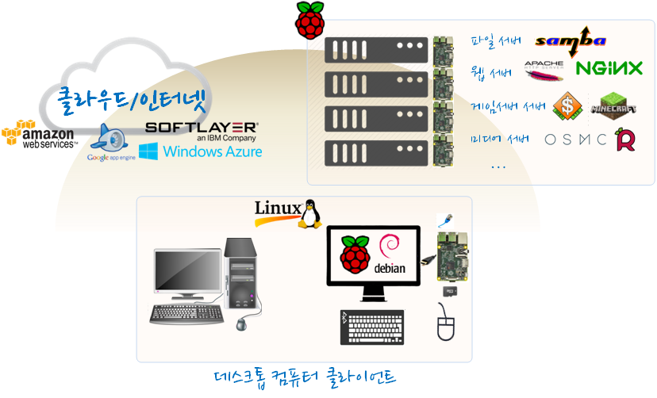
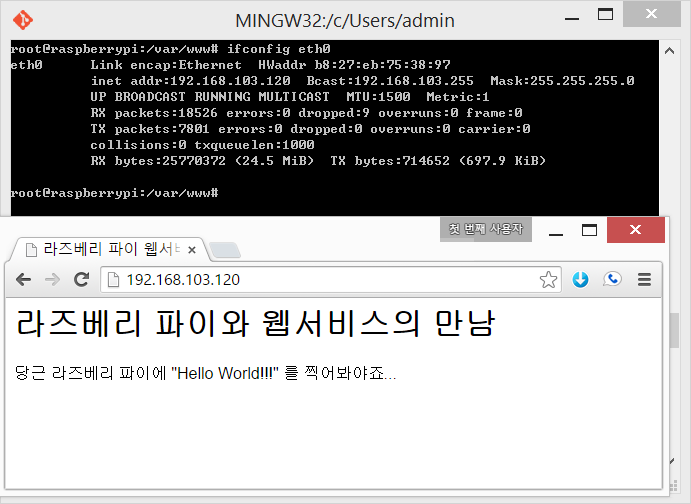
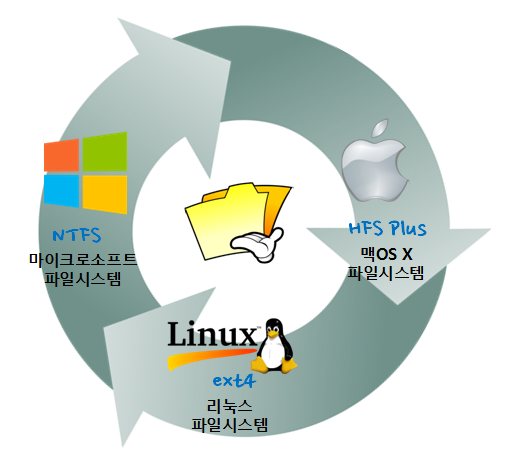

R 파이썬 소프트레이어 클라우드, xwMOOC
라즈베리 파이 서버
학습 목표
- 라즈베리 파이를 서버로 전환한다.
- 라즈베리 파이를 다양한 서비스를 제공한 서버로 구현한다.

1. 라즈베리 파이를 웹서버로 변신
라즈베리 파이는 전력 소모가 적고, 소음이 작다는 장점이 있어 트래픽이 낮은 간단한 웹서비스를 구현해서 운영하기에 더할나위 없이 훌륭한 플랫폼이다. 웹서비스를 제공하기 위해서는 라즈베리파이 같은 하드웨어 외에도 LAMP 스택이 필요하다.
- Linux: 리눅스, 운영체제 역할
- Apache: 아파치, 웹서버 역할, apache2
- Php/Python: PHP/파이썬, 동적 페이지를 위한 프로그래밍 언어, php5
- MySQL/MariaDB: MySQL/마리아디비, 데이터베이스 상태정보 저장, mysql-client mysql-server
라즈비언 운영체제를 설치했다면 이미 리눅스 운영체제는 설치를 마쳤다. 만약 자바 서버쪽이 필요하면 tomcat6를, FTP가 필요하면 vsftpd를 설치한다.
sudo su
apt-get update && apt-get upgrade
apt-get install -y apache2 php5 mysql-client mysql-server
cd /var/www
nano index.htmlindex.html 파일에 “Hello World!!!”를 찍어보자.
태그 내부에 을 넣어 주어야 한글이 깨지지 않게 된다.
<!DOCTYPE html PUBLIC "-//IETF//DTD HTML 2.0//EN">
<HTML>
<HEAD>
<meta charset="utf-8">
<TITLE>
라즈베리 파이 웹서비스 시작을 축하드립니다.
</TITLE>
</HEAD>
<BODY>
<H1>라즈베리 파이와 웹서비스의 만남</H1>
<P>당근 라즈베리 파이에 "Hello World!!!" 를 찍어봐야죠...</P>
</BODY>
</HTML>
참고 : RPi A Simple Wheezy LAMP install
2. 라즈베리 파이를 파일서버로 변신
삼바(Samba)라는 명칭은 Server Message Block에서 유래했으며, 윈도우 운영체제를 사용하는 컴퓨터와 유닉스/리눅스 컴퓨터를 사용하는 컴퓨터간에 파일, 프린터 공유를 가능하게 한다. 삼바 파일 공유 서비스가 필요해진 이유는 리눅스와 윈도우즈 사이 파일 시스템이 서로 달라 공유할 필요성에서 1992년에 Andrew Tridgell 에 의해서 처음 시작되었다.

- 리눅스 : 파일 시스템으로 ext4 (fourth extended filesystem)
- 맥 OSX : 파일 시스템 HFS+ (Hierarchical File System Plus)
- 윈도우즈: 파일 시스템 NTFS (New Technology File System)